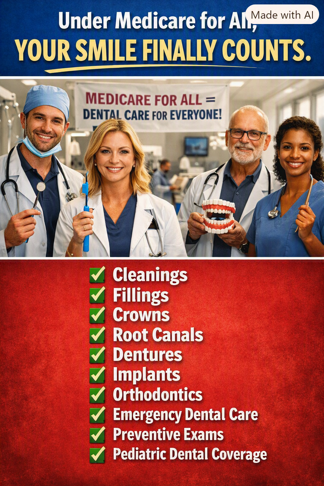

Article 32: Your Smile Finally Counts
Why dental care belongs in universal healthcare

Download illustrated Word document (.docx)
Why universal healthcare must include dental care
Illustration: A vision of comprehensive dental coverage under Medicare for All. Specific services and eligibility would depend on enacted legislation.
Your mouth is part of your body
We have built an artificial wall between medical care and dental care. A person may have coverage for a medical examination but face a substantial bill for a painful tooth, a root canal, or dentures. Yet oral health is part of overall health. Tooth infections can become serious, untreated dental problems can make eating and speaking difficult, and missing teeth can undermine nutrition, confidence, and employment opportunities. A healthcare system that claims to be comprehensive should not leave the mouth behind.
The price of waiting
When dental visits are unaffordable, people may postpone cleanings and preventive exams, hoping a small problem will disappear. A cavity that could have been treated with a filling may become an infection requiring a root canal or extraction. Delaying care can increase pain, complications, and expense. Emergency departments may relieve symptoms but often cannot provide the definitive dental treatment a patient needs. Prevention and timely treatment should be easier to obtain than emergency care.
What dental coverage should include
A comprehensive national program should cover routine exams, diagnostic X-rays when appropriate, cleanings, fillings, medically necessary crowns and root canals, extractions, periodontal treatment, and emergency dental care. It should also address dentures and other restorative services so people can eat, speak, and live with dignity. Coverage for implants and orthodontics deserves careful standards: medically necessary services should be distinguished from purely cosmetic procedures, and the precise benefits would need to be written into law.
Children deserve a healthy start
Children need regular dental care to prevent pain, infection, missed school, and problems that can affect eating and development. A national program should ensure access to pediatric dental examinations, fluoride treatments when indicated, sealants, fillings, and other necessary services. Families should not have to postpone a child’s dental appointment because a deductible has not been met.
Older Americans should not be left behind
Traditional Medicare generally excludes routine dental care, including most cleanings, fillings, dentures, and tooth extractions. Some Medicare Advantage plans offer dental benefits, but their covered services, annual limits, provider networks, and patient costs vary. Retirees living on fixed incomes may find that even partial coverage leaves significant bills. The ability to chew food comfortably and maintain oral health should not disappear with age.
A smile is also a matter of dignity
Dental disease affects more than clinical outcomes. Pain can interfere with sleep and work. Missing or damaged teeth can make a person reluctant to smile, interview for a job, or socialize. Restoring oral health can improve quality of life and help people participate fully in their communities. No one should be ashamed of a condition they cannot afford to treat.
No premiums or copayments for covered dental services
Under the comprehensive Medicare for All approach advocated here, medically necessary dental care would be financed through the public program rather than separate dental insurance premiums, deductibles, and copayments at the point of service. That does not make treatment free to society: dental professionals, clinics, equipment, and materials still require funding. The question is whether we can finance necessary care more fairly and administer it more simply than the patchwork we have now.
We must also make care available
An insurance benefit is only meaningful when a patient can find a dentist who accepts it. Universal dental coverage would require realistic reimbursement, an adequate dental workforce, support for underserved and rural areas, and sensible rules for appointments and referrals. Implementation should protect the ability of dentists and hygienists to deliver quality care while making the system easier for patients to navigate.
An investment in prevention
Dental coverage can prevent some costly complications and reduce avoidable suffering. But it would be misleading to promise that every covered dental procedure automatically pays for itself. A credible reform plan should evaluate total costs, public financing, health outcomes, and long-term benefits. The strongest argument is both practical and moral: necessary oral healthcare belongs within healthcare.
Conclusion: healthcare should include every smile
Imagine a country where parents can take their children for checkups, seniors can obtain needed dentures, workers can treat tooth pain before it becomes an emergency, and no one has to choose between groceries and a filling. That is the promise worth pursuing. Medicare for All should mean comprehensive healthcare for the whole person—including their teeth, gums, and smile. Your smile finally counts.
Editorial note: This article describes a proposed comprehensive Medicare for All system, not benefits currently available under traditional Medicare. Dental coverage would depend on the final legislation and program rules.
Willis Butts | Medicare for All
Share This Article
Help others explore the ideas and evidence behind Medicare for All.
When posting on Facebook, paste these hashtags into your post text. Sharing services may not automatically include them.